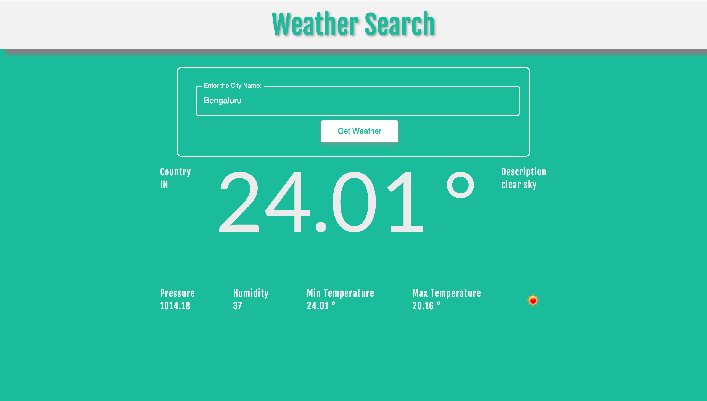

Frontend
- React
- TypeScript
- JavaScript (ES6+)
- HTML5
- CSS3
- Responsive Design
- Frontend Architecture
- CSS Flexbox
- CSS Grid
- jQuery
- BootStrap
Software engineer & builder
Hi, I am Namratha! I am a Frontend Software Engineer with 9+ years of experience building scalable React and TypeScript applications, user interfaces, and component-based systems. Experienced in frontend architecture, performance optimization, data visualization, accessibility, automated testing, debugging, and production reliability. Proven track record delivering customer-facing products, leading design and code reviews, and partnering with product, UX, and backend teams to solve complex technical problems.
Toolkit
A practical set of tools and engineering practices used to build reliable, inclusive product experiences.
Where I’ve been
Oracle America Inc.
Santa Clara, CA
Achieve Internet
San Diego, CA
PubNub
San Francisco, CA
News Corp
Bengaluru, India
DemandFarm
Bengaluru, India
Selected work
Experiments, applications, and tools built across web, mobile, IoT, and emerging technologies.
Full-stack web application
A dog breed identification app using the MERN stack and Google Cloud Vision API.
React application
An auction system built with ReactJS, reusable components, and real-time interactions.
IoT project
A Raspberry Pi and Python smart lock system exploring secure, connected access management.

Web application
A React app that fetches weather information by city, bundled with Babel and Webpack.
Connected application
Image recognition with Google Cloud Vision API and real-time alerts through PubNub and ClickSend.
Browser-based game
A multiplayer browser-based VR game built with A-Frame, PubNub, and WebVR.
A little more about me
Master of Science (M.S.) in Computer Science, San Diego State University, 2017 - 2019
Bachelor of Engineering (B.E.) in Computer Science & Engineering, JSS Academy of Technical Education, 2011 - 2015